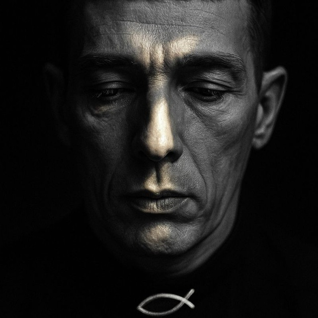

Пятнадцать лет в зависимости. Тюрьма. "Крокодил". Возвращение. Сейчас — психолог и дьякон церкви, шестнадцать лет работаю с зависимыми и их семьями. Работаю с верой как с опорой, а не как с симптомом.
«Я уже не называю вас рабами... но Я назвал вас друзьями». Ин. 15:15

положи файл photo.jpg рядомНе "сделал курс психологии и открыл консультативный кабинет". Шестнадцать лет работы с самой тяжёлой человеческой болью — потому что начинал работать оттуда же.
С молодости — наркотическая зависимость. 15 лет употребления. Четыре из них — "крокодил". К концу не мог ходить — отказали ноги. В реабилитационный центр меня привезли на носилках.
После реабилитации остался помогать. Сначала как волонтёр и наставник для новых резидентов. Принял служение дьякона в церкви. Параллельно начал учиться — психология, потом богословие. Через несколько лет основал благотворительный реабилитационный центр, который работает до сих пор.
Сейчас веду частную психологическую практику онлайн параллельно с работой в центре. Если вы пришли сюда — значит, у вас что-то болит. Я постараюсь не сделать больнее.
Я не универсальный психолог. Есть темы, в которых я провёл шестнадцать лет, и есть те, в которых я компетентен ограниченно. На первой консультации скажу прямо.
На любой стадии — от первых сомнений до глубокого срыва. Работаю и с самим зависимым, и с теми, кто рядом.
Если рядом с вами человек в зависимости и вы устали спасать, контролировать, прятать бутылки и врать на работе — это отдельная тема, и она требует отдельной работы.
Букмекеры, казино, онлайн-игры. Механизмы те же, последствия часто тяжелее — потому что меньше внешних маркеров.
Когда внутри вы живёте перед Богом-Судьёй, Богом-Отсутствием или Богом-Холодом — и это разрушает молитву, веру, отношения. С этим можно работать.
Особенно если вы выросли в религиозной среде, где стыд использовался как метод воспитания.
Не семейная терапия (это другая компетенция), а индивидуальная работа с человеком, чья семья в кризисе.
Когда внешне всё нормально, а внутри — пусто или умерло.
Если вы прошли реабилитацию и нужна долгосрочная индивидуальная поддержка — отдельный формат работы.
Работаю только онлайн — в Zoom или Telegram-видео. Длительность сессии — 50 минут. Регулярность — обычно раз в неделю, по договорённости возможны другие варианты.
Если у вас сейчас совсем нет возможности оплачивать сессии — напишите мне честно. У меня есть бесплатный реабилитационный центр для тяжёлых случаев зависимости и помощи семьям.
С разрешения и без узнаваемых деталей — отзывы людей, с которыми работал.
Тридцать минут. Без обязательств. Расскажете, с чем пришли, я расскажу, как работаю. Дальше — решаем вместе.